LL Buchanan Lake
More trees...
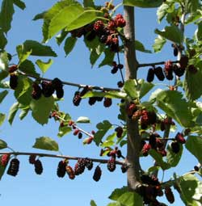
The Russian Mulberry trees. The tree guy was impressed with the Russian Mulberry trees he planted. Then he noticed all the others that started growing from wild seeds. The birds had their own tree seeding program in progress. The mulberries taste good.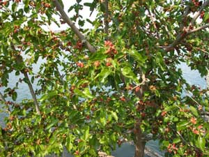
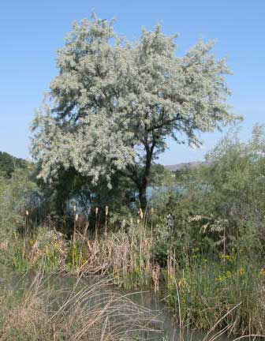
The same Russian Olive on one of the south islands, different years.
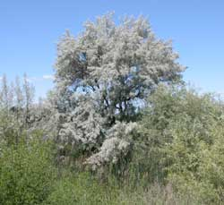
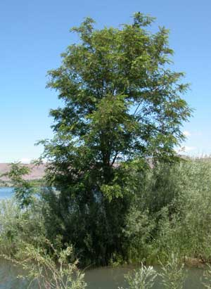
The same Black Locust on a south island, different years.
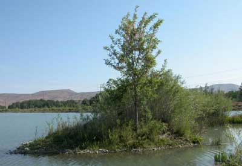
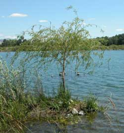
One of the little Golden Weeping Willows, planted as a sprig, grew. Alas, the beaver ate it in 2008, but one of the new shoots will be better protected from beaver.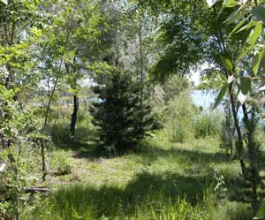
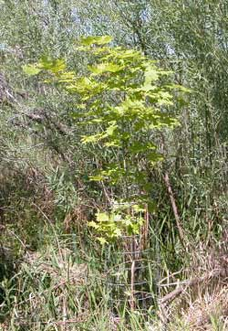
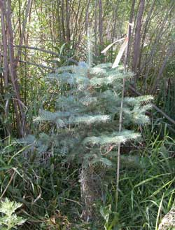
The little Golden Weeping Willow, in the center below, on one of the south end islands, will soon enough command the entire island, and shade-out the willow on the left and locust on the right.
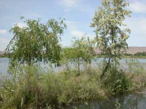
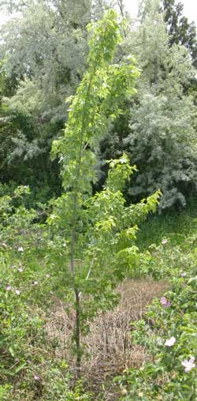
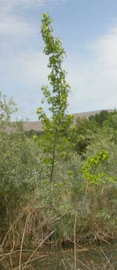
The two maples on the left grew from native seeds, but the tree guy is accepting credit for taking good care of them.
The Corkscrew Willow, below, is out in the south end slough that is flooded with water when the Yakima River is high, or the beaver dam the flood gate through the dike, much to the consternation of the dike maintance chaps.
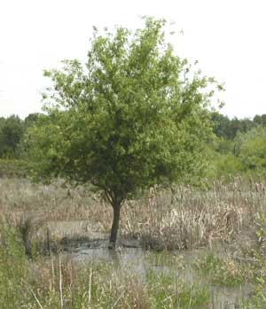
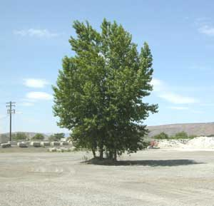
The cottonwood gang on the left, out away from the shore, successfully defended themselves against the heavy machinery long enough to become respected.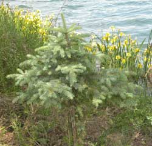
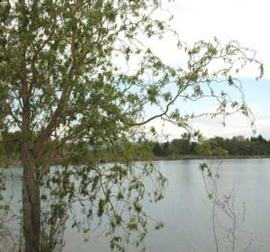
Corkscrew Willow, on the left, has confused-looking branches.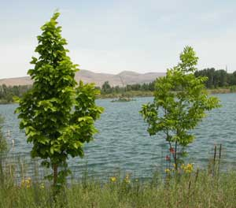
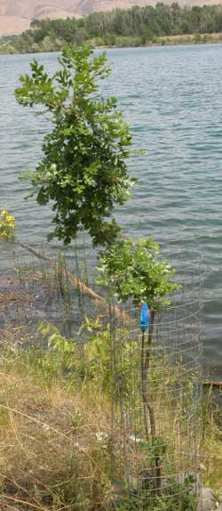
Oregon Oak, on the left.
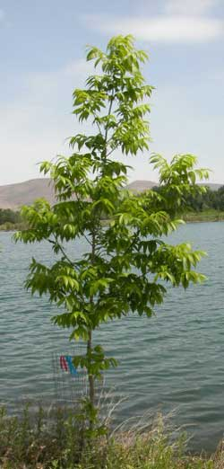
Walnut, on the left.
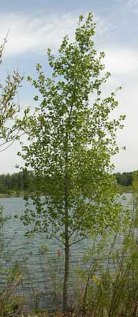
Quaking Aspen.
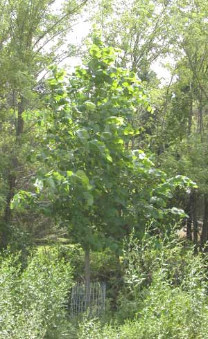
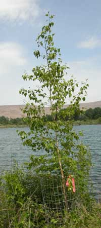
Paper Birch.
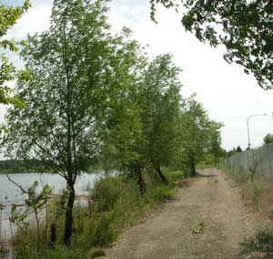
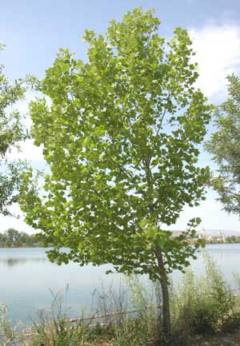
Sycamore on the left.
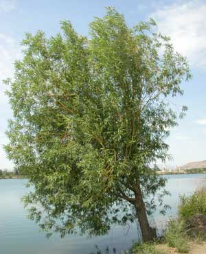
Willow.
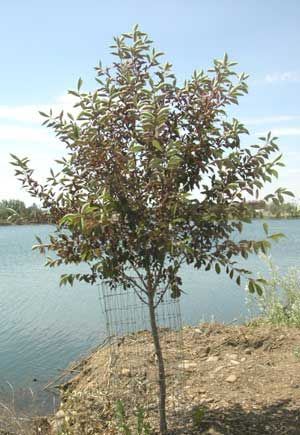
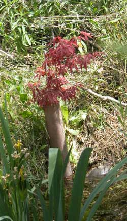
Japanese Redleaf maples are a favorite of the tree guy, but they do not appreciate being fed rocks and dry air. The survivors are growing slow.
The fancy Black Elderberry tree below is bigger than it looks, about 8 feet tall. The berries are much appreciated by the birds. And it is heavily protected from the beaver.
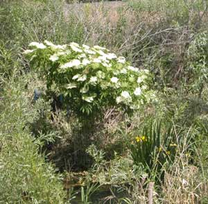
What the beaver did to more trees than shown below, during the winter of 08-09....
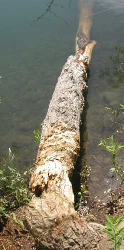
The thicker "horse fencing" was added AFTER the damage was done. Well, humans are slow learners. The thinner "welded fencing" that was previously used, was not adequate.
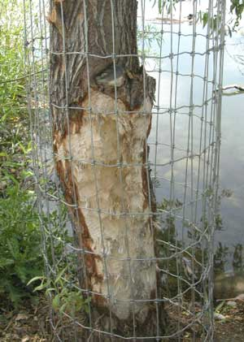
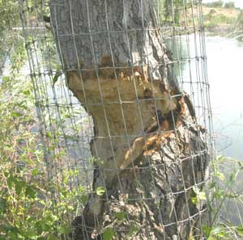
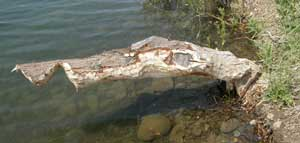
That was the tree guy's favorite willow, or one of them, or at least a nice one. It had welded fencing around it. The beaver were probably laughing when they took it off.
Barney's Island
Betty's Island-1
Betty's Island-2
Betty's Island-3
Betty's Island-4
Betty's Island-5
Betty's Island-6
Pebbles Island
Aerial photos
Neighbors
History
Swans
Birds
Trees
Trees-2
Lake
Links